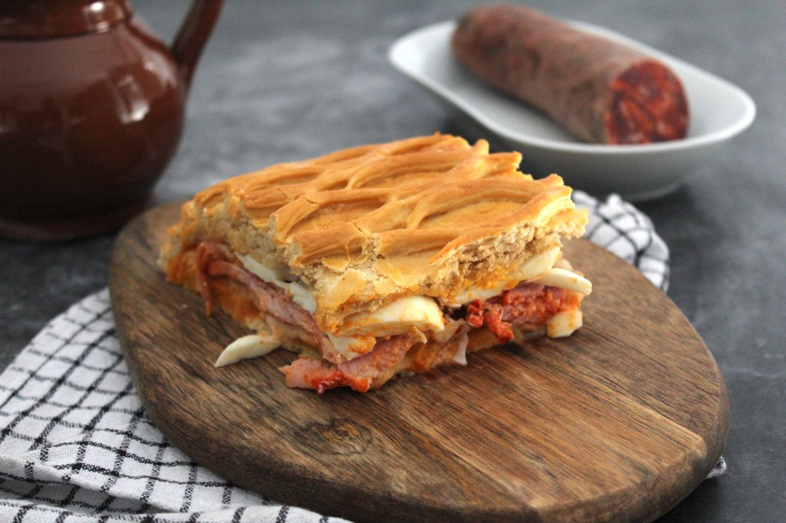

Gastronomía de Salamanca
La cocina salmantina es rica, contundente y llena de sabor. Sus productos estrella, el jamón ibérico de Guijuelo y el hornazo, son reconocidos a nivel nacional e internacional.
Platos más populares
- Hornazo salmantino
- Chanfaina
- Farinato con huevo
- Patatas meneás
- Sopa de ajo castellana
Productos típicos de la provincia
-
Charcutería ibérica
- Jamón ibérico de Guijuelo (D.O.P.)
- Lomo embuchado
- Chorizo ibérico
- Queso Arribes del Duero
- Vino D.O. Arribes
- Hornazo de Salamanca
Glosario gastronómico
- Hornazo
- Empanada tradicional rellena de lomo, chorizo y huevo cocido, típica del Lunes de Aguas, celebrado el lunes siguiente al Domingo de Resurrección.
- Chanfaina
- Guiso elaborado con arroz, menudillos de cordero o cerdo, pimentón y especias. Plato humilde de origen rural muy arraigado en la provincia.
- Farinato
- Embutido típico de Ciudad Rodrigo elaborado con harina de trigo, manteca de cerdo, pimentón y anís. Se suele tomar frito con huevos.
- Patatas meneás
- Puré rústico de patata con aceite de oliva, pimentón y trozos de chorizo o tocino. Plato de invierno muy reconfortante.
- Perrunillas
- Dulce típico salmantino elaborado con harina, manteca de cerdo, azúcar, huevo y anís. Son las galletas más tradicionales de la provincia.
Restaurantes destacados de Salamanca
| Restaurante | Especialidad |
|---|---|
| Víctor Gutiérrez | Alta cocina fusión castellana |
| El Mesón de Gonzalo | Cocina tradicional salmantina |
| La Hoja 21 | Cocina de mercado y temporada |
| Tapas 3.0 | Tapas creativas y pinchos |
Galería gastronómica
